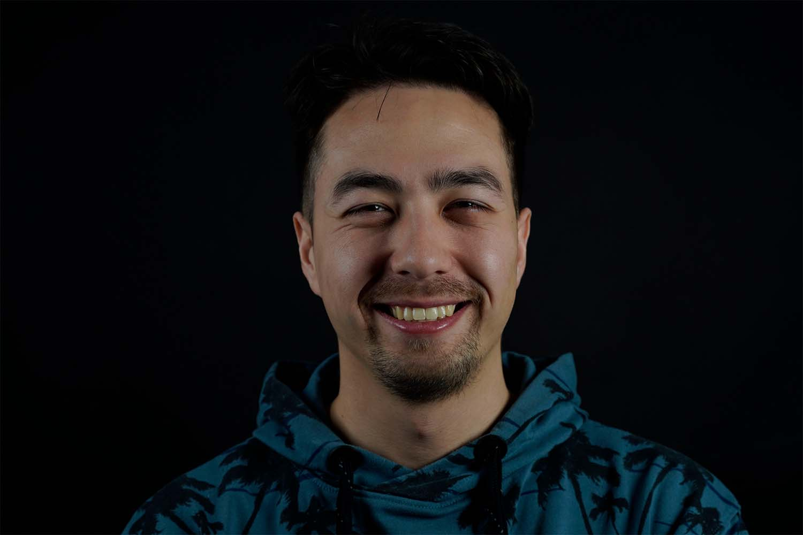
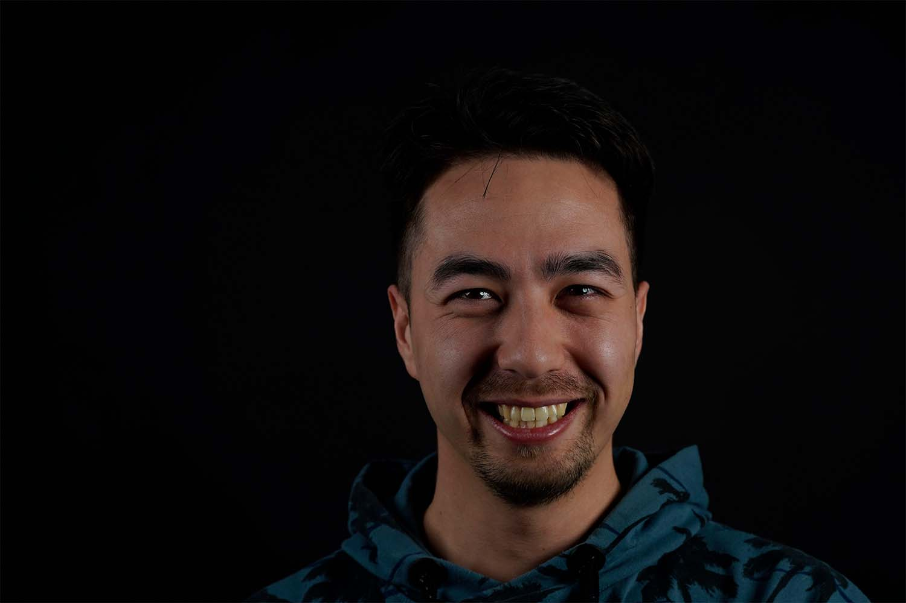

Rune Huan Yu Englund
Jeg går på multimediedesigner uddannelsen på UCL og bor på fyn. Mine største personlige styrker er at jeg er mødestabil og lærenem. Hvis jeg ikke gør mit bedste for at nå et godt resultat, er jeg heller ikke selv tilfreds. Jeg kan hurtigt lære nye programmer, jeg arbejder effektivt når der skal arbejdes og tager den med ro når der er pauser. Jeg kan godt lide at arbejde i teams, da man kan spare med hinanden og komme med forskellige idéer som man kan udvikle på sammen. Gennem mine uddannelser er jeg blevet rigtig interesseret i frontend udvikling. Jeg håber derfor, at jeg i fremtiden, kan få et job indenfor dette fag.
Jeg har færdigheder indenfor følgende software og programerings sprog: